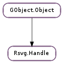

| static | new() |
| static | new_from_data(data) |
| static | new_from_file(file_name) |
| static | new_from_gfile_sync(file, flags, cancellable) |
| static | new_from_stream_sync(input_stream, base_file, flags, cancellable) |
| static | new_with_flags(flags) |
| close() | |
| get_base_uri() | |
| get_dimensions() | |
| get_dimensions_sub(id) | |
| get_pixbuf() | |
| get_pixbuf_sub(id) | |
| get_position_sub(id) | |
| has_sub(id) | |
| read_stream_sync(stream, cancellable) | |
| render_cairo(cr) | |
| render_cairo_sub(cr, id) | |
| set_base_gfile(base_file) | |
| set_base_uri(base_uri) | |
| set_dpi(dpi) | |
| set_dpi_x_y(dpi_x, dpi_y) | |
| write(buf) |
| Name | Type | Flags | Description |
|---|---|---|---|
| base-uri | str | r/w | Base URI |
| desc | str | r | SVG file description |
| dpi-x | float | r/w | Horizontal resolution |
| dpi-y | float | r/w | Vertical resolution |
| em | float | r | em |
| ex | float | r | ex |
| flags | Rsvg.HandleFlags | r/w/c | |
| height | int | r | Image height |
| metadata | str | r | SVG file metadata |
| title | str | r | SVG file title |
| width | int | r | Image width |
None
| Name | Type | Access |
|---|---|---|
| parent | GObject.Object | r |
Bases: GObject.Object
The Rsvg.Handle is an object representing the parsed form of a SVG
| Returns: | A new Rsvg.Handle |
|---|---|
| Return type: | Rsvg.Handle |
Returns a new rsvg handle. Must be freed with g_object_unref. This handle can be used for dynamically loading an image. You need to feed it data using rsvg_handle_write, then call rsvg_handle_close when done. Afterwords, you can render it using Cairo or get a GdkPixbuf.Pixbuf from it. When finished, free with GObject.Object.unref (). No more than one image can be loaded with one handle.
| Parameters: | data ([int]) – The SVG data |
|---|---|
| Raises: | GLib.GError |
| Returns: | A Rsvg.Handle or None if an error occurs. |
| Return type: | Rsvg.Handle |
Loads the SVG specified by #data.
| Parameters: | file_name (str) – The file name to load. If built with gnome-vfs, can be a URI. |
|---|---|
| Raises: | GLib.GError |
| Returns: | A Rsvg.Handle or None if an error occurs. |
| Return type: | Rsvg.Handle |
Loads the SVG specified by #file_name.
| Parameters: |
|
|---|---|
| Raises: | |
| Returns: | a new Rsvg.Handle on success, or None with error filled in |
| Return type: |
Creates a new Rsvg.Handle for file.
If cancellable is not None, then the operation can be cancelled by triggering the cancellable object from another thread. If the operation was cancelled, the error Gio.IOErrorEnum.CANCELLED will be returned.
| Parameters: |
|
|---|---|
| Raises: | |
| Returns: | a new Rsvg.Handle on success, or None with error filled in |
| Return type: |
Creates a new Rsvg.Handle for stream.
If cancellable is not None, then the operation can be cancelled by triggering the cancellable object from another thread. If the operation was cancelled, the error Gio.IOErrorEnum.CANCELLED will be returned.
| Parameters: | flags (Rsvg.HandleFlags) – flags from Rsvg.HandleFlags |
|---|---|
| Returns: | a new Rsvg.Handle |
| Return type: | Rsvg.Handle |
Creates a new Rsvg.Handle with flags flags.
| Raises: | GLib.GError |
|---|---|
| Returns: | True on success, or False on error |
| Return type: | bool |
Closes handle, to indicate that loading the image is complete. This will return True if the loader closed successfully. Note that handle isn’t freed until g_object_unref is called.
| Returns: | the base uri, possibly null |
|---|---|
| Return type: | str |
Gets the base uri for this Rsvg.Handle.
| Return type: | dimension_data: Rsvg.DimensionData |
|---|
Get the SVG’s size. Do not call from within the size_func callback, because an infinite loop will occur.
| Parameters: | id (str) – An element’s id within the SVG, or None to get the dimension of the whole SVG. For example, if you have a layer called “layer1” for that you want to get the dimension, pass “#layer1” as the id. |
|---|---|
| Return type: | bool, dimension_data: Rsvg.DimensionData |
Get the size of a subelement of the SVG file. Do not call from within the size_func callback, because an infinite loop will occur.
| Returns: | the pixbuf loaded by #handle, or None. |
|---|---|
| Return type: | GdkPixbuf.Pixbuf |
Returns the pixbuf loaded by #handle. The pixbuf returned will be reffed, so the caller of this function must assume that ref. If insufficient data has been read to create the pixbuf, or an error occurred in loading, then None will be returned. Note that the pixbuf may not be complete until rsvg_handle_close has been called.
| Parameters: | id (str) – The id of an element inside the SVG, or None to render the whole SVG. For example, if you have a layer called “layer1” that you wish to render, pass “##layer1” as the id. |
|---|---|
| Returns: | the pixbuf loaded by #handle, or None. |
| Return type: | GdkPixbuf.Pixbuf |
Returns the pixbuf loaded by #handle. The pixbuf returned will be reffed, so the caller of this function must assume that ref. If insufficient data has been read to create the pixbuf, or an error occurred in loading, then None will be returned. Note that the pixbuf may not be complete until rsvg_handle_close has been called.
| Parameters: | id (str) – An element’s id within the SVG. For example, if you have a layer called “layer1” for that you want to get the position, pass “##layer1” as the id. |
|---|---|
| Return type: | bool, position_data: Rsvg.PositionData |
Get the position of a subelement of the SVG file. Do not call from within the size_func callback, because an infinite loop will occur.
| Parameters: | id (str) – an element’s id within the SVG |
|---|---|
| Returns: | True if id exists in the SVG document |
| Return type: | bool |
Checks whether the element id exists in the SVG document.
| Parameters: |
|
|---|---|
| Raises: | |
| Returns: | True if reading stream succeeded, or False otherwise with error filled in |
| Return type: |
Reads stream and writes the data from it to handle.
If cancellable is not None, then the operation can be cancelled by triggering the cancellable object from another thread. If the operation was cancelled, the error Gio.IOErrorEnum.CANCELLED will be returned.
| Parameters: | cr (cairo.Context) – A Cairo renderer |
|---|---|
| Returns: | True if drawing succeeded. |
| Return type: | bool |
Draws a SVG to a Cairo surface
| Parameters: |
|
|---|---|
| Returns: | True if drawing succeeded. |
| Return type: |
Draws a subset of a SVG to a Cairo surface
| Parameters: | base_file (Gio.File) – a Gio.File |
|---|
Set the base URI for handle from file. Note: This function may only be called before Rsvg.Handle.write () or Rsvg.Handle.read_stream_sync () has been called.
| Parameters: | base_uri (str) – The base uri |
|---|
Set the base URI for this SVG. This can only be called before Rsvg.Handle.write () has been called.
| Parameters: | dpi (float) – Dots Per Inch (aka Pixels Per Inch) |
|---|
Sets the DPI for the outgoing pixbuf. Common values are 75, 90, and 300 DPI. Passing a number <= 0 to #dpi will reset the DPI to whatever the default value happens to be.
| Parameters: |
|
|---|
Sets the DPI for the outgoing pixbuf. Common values are 75, 90, and 300 DPI. Passing a number <= 0 to #dpi_x or #dpi_y will reset the DPI to whatever the default value happens to be.
| Parameters: | buf ([int]) – pointer to svg data |
|---|---|
| Raises: | GLib.GError |
| Returns: | True on success, or False on error |
| Return type: | bool |
Loads the next count bytes of the image. This will return True if the data was loaded successful, and False if an error occurred. In the latter case, the loader will be closed, and will not accept further writes. If False is returned, error will be set to an error from the Rsvg.Error domain. Errors from Gio.IOErrorEnum are also possible.